Java 版游戏和光影加载器安装指南
安装 Java
推荐安装 GraalVM JDK。
在页面上展开第一项 Java 版本，对于 1.18 及以前的版本，选择
Java 21，否则选择Java 23。展开第二项，根据你的系统选择版本，如果你不确定且不是苹果用户，选择
Windows x64，然后点击Download。
下载之后，解压到任意位置（推荐解压到
C:\Program Files\Java\方便管理），并在开始菜单中搜索path，打开编辑系统环境变量。对于其他系统用户，请自行搜索如何修改。
选择
高级>环境变量…>系统变量，找到变量名为Path的变量。选择
编辑>新建，然后键入<你的解压路径>\bin并保存。
获取启动器
- 官方启动器
没有特色就是最大的特色。 你猜为什么这么多第三方启动器？
不支持离线模式，不支持嵌入式安装。
未购买前只能游玩试玩模式
官方洁癖专用启动器
- HMCL 启动器
支持在启动器内下载 CurseForge 和 Modrinth 上的模组
支持嵌入式安装加载器，且可随意更换
支持离线模式和第三方验证服务器
支持导入整合包
镜像源加速下载
国产启动器
- PCL 2 启动器
在启动器内下载 CurseForge 和 Modrinth 上的模组
支持嵌入式安装加载器（不可更换）
支持离线模式和第三方验证服务器
支持导入整合包
镜像源加速下载
国产启动器
也许无聊的时候可以玩玩启动器？
- Multi MC 启动器
支持在启动器内安装加载器
支持导入整合包
便捷的版本管理
什么是离线模式？
离线模式下无法访问开启了正版验证的服务器，无法接入 Mojang 屏蔽词审查，本质上就是盗版模式。
什么是嵌入式安装？
嵌入式安装需要启动器支持。可以将安装了加载器的版本和原版合并为同一个版本。
安装游戏
要安装哪一个光影加载器？
如果你是新手，可以先尝试安装最简单的仅安装 OptiFine。
需要安装其他模组吗？
打开启动器，点击
下载。选择游戏版本，需要与 OptiFine 所支持的版本一致。
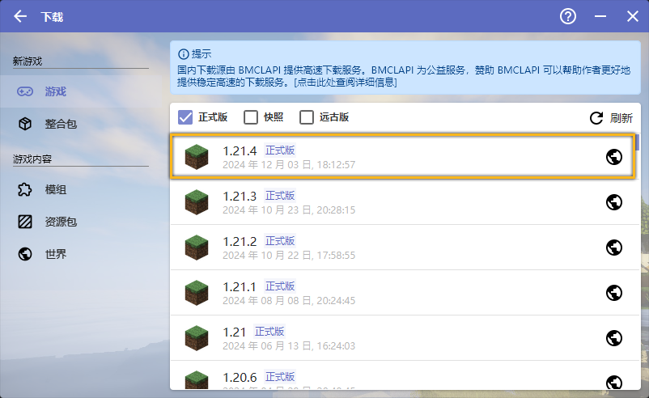 有时候 OptiFine 可能没有及时更新，你可以前往 OptiFine 官网 确认。
选择
OptiFine。选择最新版的 OptiFine 。
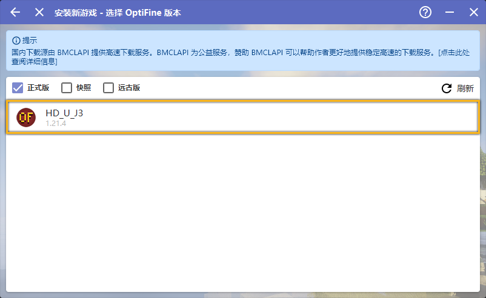 回到启动器主页，点击
启动游戏即可。若想配置启动选项，请参阅下文。
部分 Forge 模组可能和 OptiFine 存在未知冲突。
如果你的游戏无法启动，请尝试删除其他模组或卸载 Forge。
前往 OptiFine 官网 获取 OptiFine，并同时注意其所支持的最新游戏版本。
打开启动器，点击
下载。选择游戏版本，需要与 OptiFine 所支持的版本一致。
选择
Forge。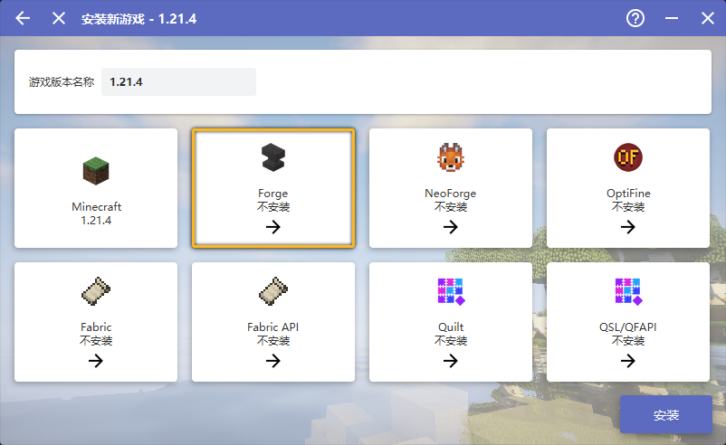 选择 OptiFine 对应版本的 Forge 。
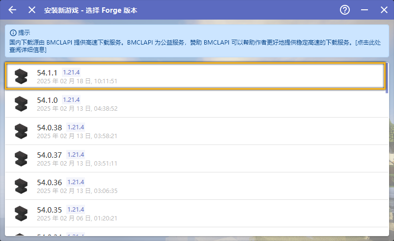 点击
安装然后等待完成。回到主界面，点击游戏版本
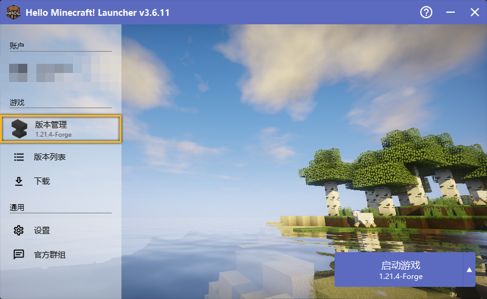 选择
模组管理，将下载好的 OptiFine 拖入。回到启动器主页，点击
启动游戏即可。若想配置启动选项，请参阅下文。
要在 Fabric 上运行 OptiFine 我们需要 OptiFabric 作为桥梁，兼容性较差，与多数模组存在冲突。
如果你的游戏无法启动，请尝试删除其他模组或卸载 Fabric。
前往 OptiFabric 的 CurseForge 页面 获取 OptiFabric，并同时注意其所支持的最新游戏版本（你也可以在启动器中直接下载）。
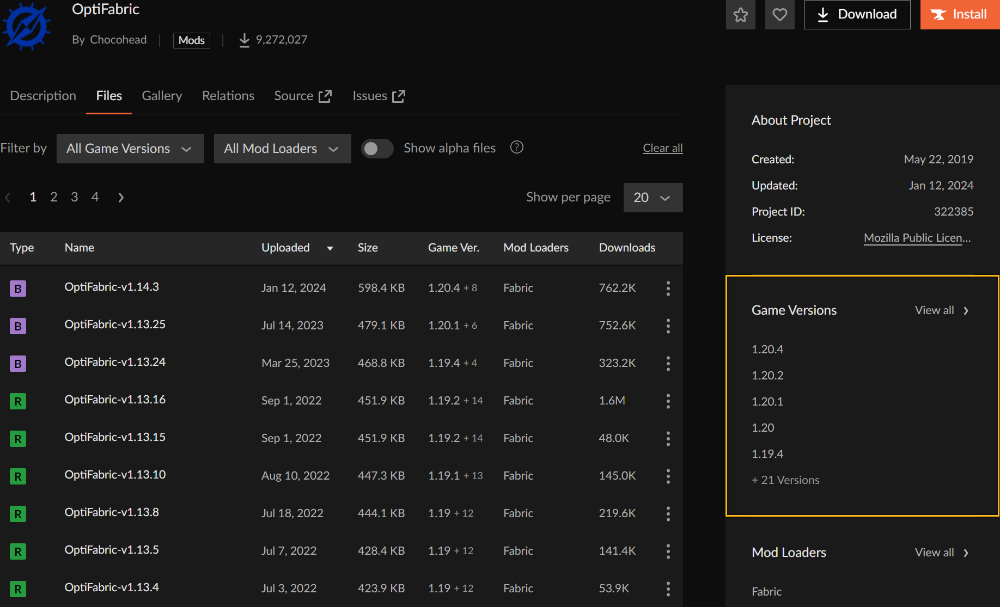 前往 OptiFabric 的 CurseForge 页面 获取 OptiFine，并同时注意下载对应 OptiFabirc 所支持的最新游戏版本。
打开启动器，点击
下载。选择游戏版本，需要与 OptiFabric 和 OptiFine 所支持的版本一致。
选择
Fabric。选择最新版的 Fabric 。
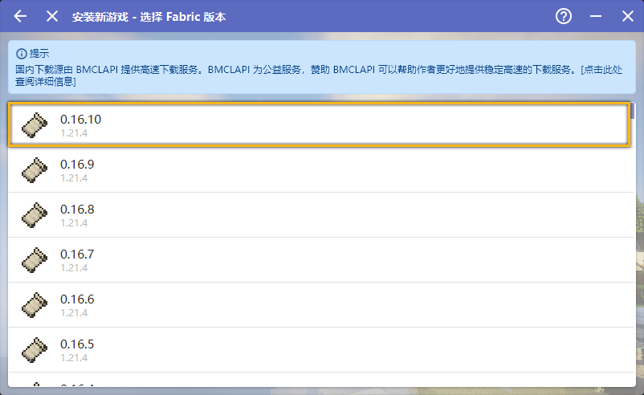 选择
Fabric API。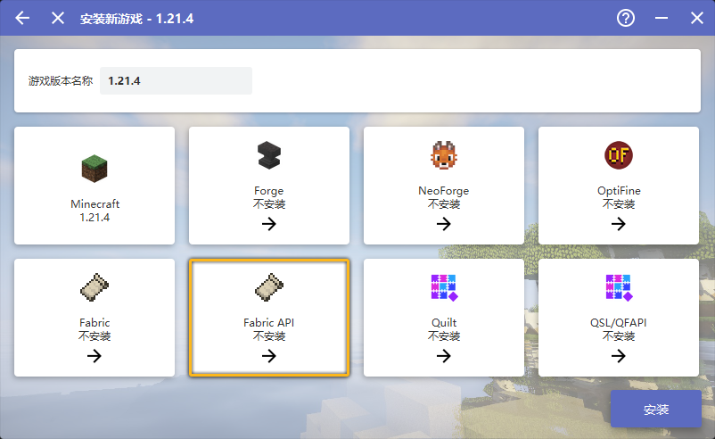 选择最新版的 Fabric API 。
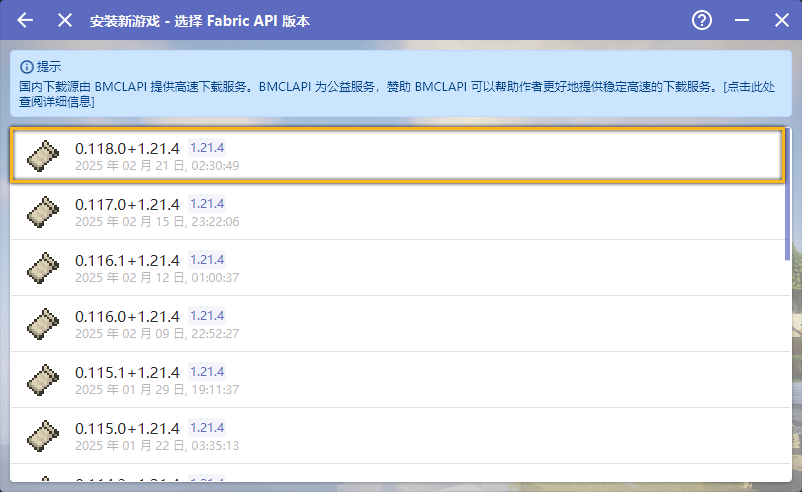 点击
安装然后等待完成。回到主界面，点击游戏版本
选择
模组管理，将下载好的 OptiFabric 和 OptiFine 拖入。回到启动器主页，点击
启动游戏即可。若想配置启动选项，请参阅下文。
Iris 能在非 Forge 的加载器环境下运行，且与模组的兼容性较好，这里以 Fabric 作为演示。
Iris 对一些光影存在兼容性问题，若你想用的光影没有声明需要 Iris 独占特性，我们建议你安装 OptiFine。
若你想要在 Forge 下运行光影且其他模组与 OptiFine 存在冲突，可以尝试 Oculus。
打开启动器，点击
下载。选择游戏版本，需要与 Iris 所支持的版本一致。
有时候 Iris 可能没有及时更新，你可以前往 Iris 的 Modrinth 页面 确认。
选择
Fabric。选择最新版的 Fabric 。
选择
Fabric API。选择最新版的 Fabric API 。
点击
安装然后等待完成。回到主菜单，再次点击
下载。选择
模组，确保游戏是刚才下载的版本，将下载源切换到Modrinth，在名称处键入Iris进行搜索，然后选择搜索结果的Iris Shaders。点击
推荐版本，然后安装必须的前置模组，最后点击安装到当前版本。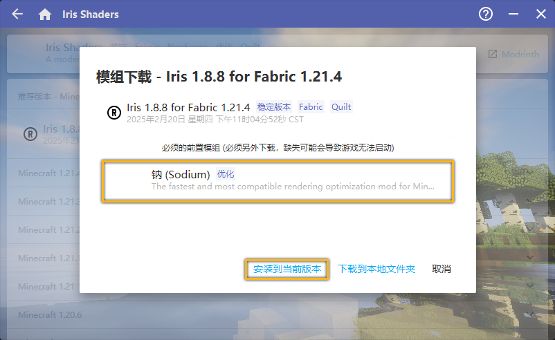 回到启动器主页，点击
启动游戏即可。若想配置启动选项，请参阅下文。
不是哥们？这可跑不了绝大部分光影哦，你自己想清楚。
打开启动器，点击
下载。选择游戏版本，通常选择最新正式版即可。
点击
安装然后等待完成。回到启动器主页，点击
启动游戏即可。若想配置启动选项，请参阅下文。
包括 Canvas、Vulkanite、Oculus 等加载器均可参考 Iris 的安装方案，只需要在最后下载对应模组即可。
若你需要手动下载加载器，这里给出了各加载器的官方网站：
配置游戏
点击版本进入游戏管理。
如果你的游戏目录有其他游戏版本，并且你希望单独对这个版本进行设置，勾选
启用游戏特定设置。否则，点击
编辑全局版本设置。
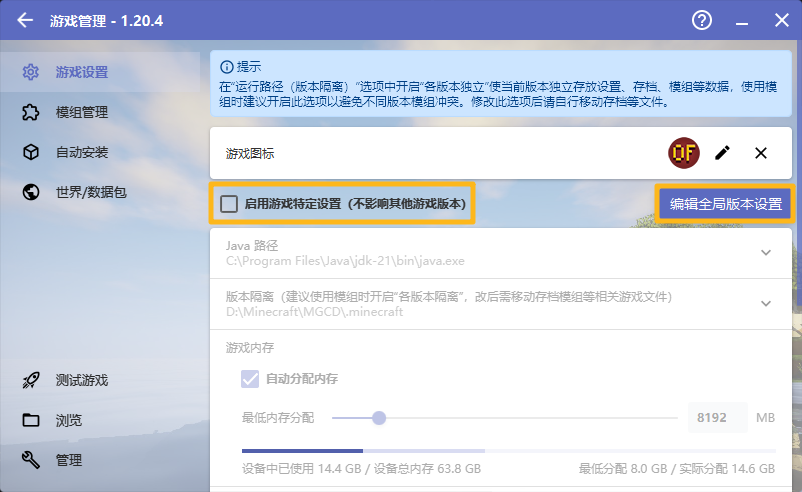 这里简单列举一下这个页面各个选项的作用
- Java 路径
决定你的游戏所用的 Java，确保你按照 前文 所述，配置好了 Java，然后选择
自动选择合适的 Java。- 版本隔离
决定你的游戏文件存取位置，更改此选项之后需要手动将资源文件（光影、资源包、模组、存档）移至更改后的位置。
默认模式将游戏的各种资源文件放在<你的目录>\.minecraft\下，并且和其他未开启版本隔离的游戏共享。各版本独立模式将游戏的资源文件放在<你的目录>\.minecraft\versions\<对应游戏版本文件夹>\下，并且不与其他任何版本共享。自定义模式由你自己决定游戏资源文件的存放位置，并且与其他同位置的的版本共享。
- 游戏内存
决定游戏分配的内存，最好小于等于
设备总内存的一半，且不大于 16 GB。- 自动分配内存
勾选后
游戏内存选项变为最低内存分配，根据当前系统是否空闲和版本预估内存要求动态分配内存，但是不超过最低内存分配。
- 启动器可见性
决定游戏启动后启动器的行为，保留启动器可能在后台占用资源，但是如果游戏崩溃了，启动器可以输出崩溃日志。
- 游戏窗口分辨率
决定你游戏窗口的默认大小，如果你不确定，保持其为原样。
- 查看日志
开启后会额外启动一个游戏日志窗口，如果不进行调试，不需要开启。
- 进程优先级
游戏在 Windows 线程上的优先级，优先级越高，游戏越会被 CPU 优先处理，在一定程度上可以缓解 CPU 瓶颈，但是并不能提高太多性能，还可能导致游戏崩溃。
- 服务器地址
如果填写，在启动游戏后会尝试自动加入服务器。
- 高级设置
不要动这里的选项。

如果你的游戏目录有其他游戏版本，并且你希望单独对这个版本进行设置，点击
版本设置。否则，点击顶栏的
设置。
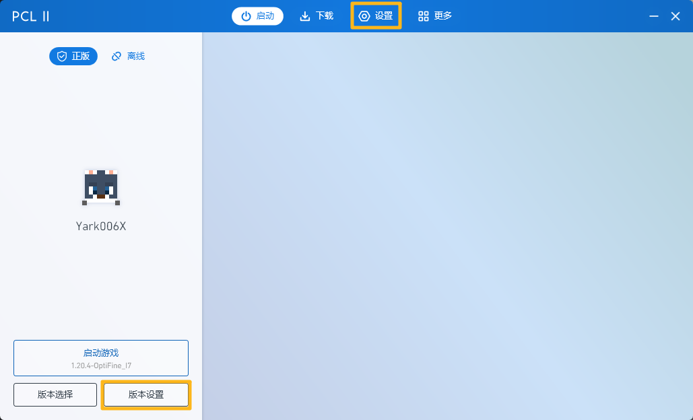 这里简单列举一下这个页面各个选项的作用
- 离线皮肤
离线模式下玩家所使用的皮肤
随机：随机从 默认皮肤和模型 中抽取。
Steve / Alex：固定史蒂夫或艾利克斯皮肤。
正版皮肤：使用下方
正版玩家名所填玩家的皮肤。自定义：从电脑上选择其他皮肤。
- 游戏窗口标题
Windows 窗口上的标题，将鼠标停留在输入框上可以查看格式化代码。
- 自定义信息
在游戏中左下角和 F3 调试界面左上角的信息。
- 版本隔离
关闭模式将游戏的各种资源文件（光影、资源包、存档）放在<你的目录>\.minecraft\下，并且和其他未开启版本隔离的游戏共享。隔离<版本>模式将符合要求版本的资源文件放在<你的目录>\.minecraft\versions\<对应游戏版本文件夹>\下，并且不与其他任何版本共享。
- 启动器可见性
决定游戏启动后启动器的行为，保留启动器可能在后台占用资源，但是如果游戏崩溃了，启动器可以输出崩溃日志。
- 进程优先级
游戏在 Windows 线程上的优先级，优先级越高，游戏越会被 CPU 优先处理，在一定程度上可以缓解 CPU 瓶颈，但是并不能提高太多性能，还可能导致游戏崩溃。
- 游戏窗口
决定你游戏窗口的默认大小，如果你不确定，设置为
默认大小。- 游戏 Java
决定你的游戏所用的 Java，确保你按照 前文 所述，配置好了 Java，然后选择
自动选择合适的 Java。- 游戏内存
决定游戏分配的内存，最好小于等于
设备总内存的一半，且不大于 16 GB，如果你不确定，将其设置为自动配置。- 高级启动选项
不要动这里的选项。
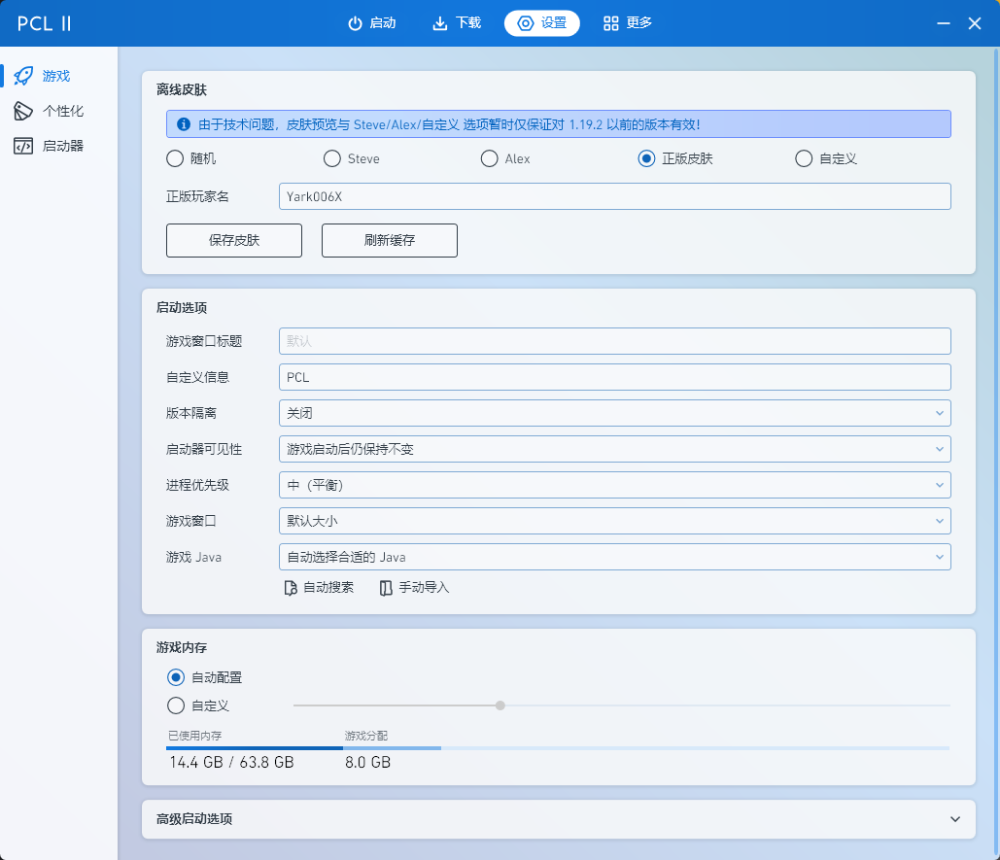
启动游戏后，你可能需要配置视频设置，参阅 视频设置和相关显示问题。
参阅 Java 版光影安装指南 和 Java 版资源包安装指南 以安装光影和资源包。